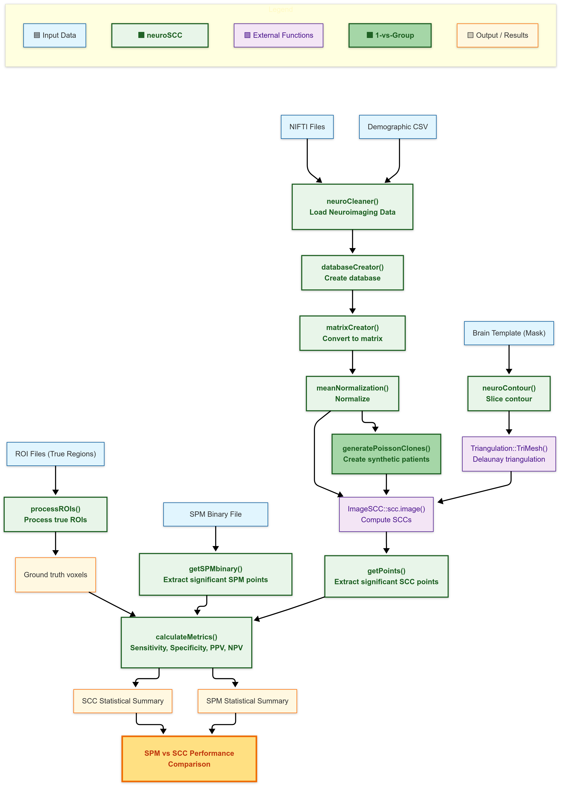

üöÄ neuroSCC facilitates structured processing of PET neuroimaging data for the estimation of Simultaneous Confidence Corridors (SCCs). It integrates neuroimaging and statistical methodologies to:
- üì• Load and preprocess PET neuroimaging files.
- üî¨ Transform data for a Functional Data Analysis (FDA) setup.
- üéØ Extract meaningful contours and identify significant SCC regions.
- üìä Compare SCC-based analyses with gold-standard methods like SPM.
The package bridges established neuroimaging tools (oro.nifti) with advanced statistical methods (ImageSCC), supporting one-group, two-group, and single-patient vs. group comparisons.
üìå Developed as part of the Ph.D.¬†thesis: ‚ÄúDevelopment of statistical methods for neuroimage data analysis towards early diagnosis of neurodegenerative diseases‚Äù, by Juan A. Arias at University of Santiago de Compostela (Spain).
üìñ Table of Contents
- About the Project
- Installation
- Functions Overview
- Vignette
- Visual Workflow
- References
- Contributing & Feedback
1️⃣ About the Project
Why Use neuroSCC?
PET neuroimaging data is complex, requiring careful processing and statistical validation. neuroSCC is designed to:
✔ Automate Preprocessing: Load, clean, and structure PET data üìÇ
✔ Standardize Analysis: Convert images into FDA-compatible formats üî¨
✔ Evaluate SCC Estimations: Identify significant regions with confidence üéØ
✔ Enable Method Comparisons: SCC vs SPM performance evaluation üìä
It is particularly suited for: - Clinical neuroimaging research (Alzheimer’s disease, neurodegeneration). - Statistical validation of imaging methods. - Comparisons between SCC and other statistical approaches.
2️⃣ Installation
üîπ Stable GitHub Release (Future)
# Install the latest stable release (Future)
remotes::install_github("iguanamarina/neuroSCC@94f4f65")
library(neuroSCC)üì¶ Development Version (Latest Features)
# Install the latest development version
remotes::install_github("iguanamarina/neuroSCC")
library(neuroSCC)3️⃣ Functions Overview
üߺ neuroCleaner(): Load & Clean PET Data
neuroCleaner() reads NIFTI neuroimaging files, extracts voxel-wise data, and structures it into a tidy data frame.
It is the first preprocessing step, ensuring that PET images are cleaned and formatted for further analysis. It also integrates demographic data when available.
Click to expand
# Load a sample NIFTI file included in the package
niftiFile <- system.file("extdata", "syntheticControl1.nii.gz", package = "neuroSCC")
# Structure the data
clean_data <- neuroCleaner(niftiFile)
head(clean_data)üìä databaseCreator(): Convert Multiple Files into a Database
databaseCreator() scans a directory for PET image files, processes each with neuroCleaner(), and compiles them into a structured data frame.
This function is critical for batch analysis, preparing data for group-level SCC comparisons.
Click to expand
# Get the file path for sample data
dataDir <- system.file("extdata", package = "neuroSCC")
# Example 1: Create database for Controls
controlPattern <- "^syntheticControl.*\\.nii.gz$"
databaseControls <- databaseCreator(pattern = controlPattern, control = TRUE, quiet = TRUE)
head(databaseControls); tail(databaseControls)
nrow(databaseControls) # Total number of rows
unique(databaseControls$CN_number) # Show unique subjects
# Example 2: Create database for Pathological group
pathologicalPattern <- "^syntheticPathological.*\\.nii.gz$"
databasePathological <- databaseCreator(pattern = pathologicalPattern, control = FALSE, quiet = TRUE)
head(databasePathological); tail(databasePathological)
nrow(databasePathological) # Total number of rows
unique(databasePathological$AD_number) # Show unique subjectsüìê getDimensions(): Extract Image Dimensions
getDimensions() extracts the spatial dimensions of a neuroimaging file, returning the number of voxels in the x, y, and z axes.
This ensures proper alignment of neuroimaging data before further processing.
Click to expand
# Extract spatial dimensions of a PET scan
niftiFile <- system.file("extdata", "syntheticControl1.nii.gz", package = "neuroSCC")
dims <- getDimensions(niftiFile)
print(dims)üìä matrixCreator(): Convert PET Data into a Functional Matrix
matrixCreator() transforms PET imaging data into a matrix format for functional data analysis.
Each row represents a subject’s PET data, formatted to align with FDA methodologies.
Click to expand
# Generate a database using databaseCreator
dataDir <- system.file("extdata", package = "neuroSCC")
controlPattern <- "^syntheticControl.*\\.nii.gz$"
databaseControls <- databaseCreator(pattern = controlPattern, control = TRUE, quiet = FALSE)
# Convert the database into a matrix format
matrixControls <- matrixCreator(databaseControls, paramZ = 35, quiet = FALSE)
dim(matrixControls) # Show matrix dimensionsüìâ meanNormalization(): Normalize Data
meanNormalization() performs row-wise mean normalization, adjusting intensity values across subjects.
This removes global intensity differences, making datasets comparable in Functional Data Analysis (FDA).
Click to expand
# Generate a database and create a matrix
dataDir <- system.file("extdata", package = "neuroSCC")
controlPattern <- "^syntheticControl.*\\.nii.gz$"
databaseControls <- databaseCreator(pattern = controlPattern, control = TRUE, quiet = TRUE)
matrixControls <- matrixCreator(databaseControls, paramZ = 35, quiet = TRUE)
# Normalize the matrix with detailed output
normalizationResult <- meanNormalization(matrixControls, returnDetails = TRUE, quiet = FALSE)
# Show problematic rows if any
if (length(normalizationResult$problemRows) == 0) {
cat("No problematic rows detected.\n")
} else {
print(normalizationResult$problemRows)
}üìà neuroContour(): Extract Contours
neuroContour() extracts region boundaries (contours) from neuroimaging data.
It is particularly useful for defining masks or Regions of Interest (ROIs) before SCC computation.
Click to expand
# Get the file path for a sample NIfTI file
niftiFile <- system.file("extdata", "syntheticControl1.nii.gz", package = "neuroSCC")
# Extract contours at level 0
contours <- neuroContour(niftiFile, paramZ = 35, levels = 0, plotResult = TRUE)
# Display the extracted contour coordinates
if (length(contours) > 0) {
head(contours[[1]]) # Show first few points of the main contour
}üî∫ getPoints(): Identify Significant SCC Differences
getPoints() identifies regions with significant differences from an SCC computation.
After ImageSCC::scc.image() computes SCCs, getPoints() extracts coordinates where group differences exceed confidence boundaries.
Click to expand
# Load precomputed SCC example
data("SCCcomp", package = "neuroSCC")
# Extract significant SCC points
significantPoints <- getPoints(SCCcomp)
# Show first extracted points (interpretation depends on SCC computation, see description)
head(significantPoints$positivePoints) # Regions where Pathological is hypoactive vs. Control
head(significantPoints$negativePoints) # Regions where Pathological is hyperactive vs. Controlüß© getSPMbinary(): Extract SPM-Detected Significant Points
getSPMbinary() extracts significant points from an SPM-generated binary NIfTI file.
It returns voxel coordinates where SPM detected significant differences, making it comparable to SCC results.
Click to expand
# Load a sample binary NIfTI file (SPM result)
niftiFile <- system.file("extdata", "binary.nii", package = "neuroSCC")
detectedSPM <- getSPMbinary(niftiFile, paramZ = 35)
# Show detected points
head(detectedSPM)üè∑Ô∏è processROIs(): Process ROI Data
processROIs() processes Regions of Interest (ROIs) from neuroimaging files.
It extracts voxel coordinates for predefined hypoactive regions, structuring them for SCC analysis.
Click to expand
# Process an ROI NIfTI file (show results in console)
roiFile <- system.file("extdata", "ROIsample_Region2_18.nii", package = "neuroSCC")
processedROI <- processROIs(roiFile, region = "Region2", number = "18", save = FALSE)
head(processedROI) # Display first few rowsüë• generatePoissonClones(): Generate Synthetic PET Data
generatePoissonClones() creates synthetic clones of PET neuroimaging data by adding Poisson-distributed noise. This function is essential for 1 vs. Group SCC analyses, where a single subject’s data needs to be expanded to allow for valid statistical inference.
Click to expand
# Get a single patient's PET data matrix
dataDir <- system.file("extdata", package = "neuroSCC")
pathologicalPattern <- "^syntheticPathological.*\\.nii.gz$"
databasePathological <- databaseCreator(pattern = pathologicalPattern, control = FALSE, quiet = TRUE)
matrixPathological <- matrixCreator(databasePathological, paramZ = 35, quiet = TRUE)
patientMatrix <- matrixPathological[1, , drop = FALSE] # Select a single patient
# Select 10 random columns for visualization
set.seed(123)
sampledCols <- sample(ncol(patientMatrix), 10)
# Show voxel intensity values before cloning
patientMatrix[, sampledCols]
# Generate 5 synthetic clones with Poisson noise
clones <- generatePoissonClones(patientMatrix, numClones = 5, lambdaFactor = 0.25)
# Show voxel intensity values after cloning
clones[, sampledCols]üìä calculateMetrics(): Evaluate SCC Performance
calculateMetrics() assesses the accuracy of SCC-detected significant points by comparing them to known true ROI regions. It computes Sensitivity, Specificity, PPV, and NPV, allowing for a quantitative evaluation of SCC performance.
Click to expand
# Extract detected SCC points
detectedSCC <- getPoints(SCCcomp)$positivePoints
# Extract detected SPM points
spmFile <- system.file("extdata", "binary.nii", package = "neuroSCC")
detectedSPM <- getSPMbinary(spmFile, paramZ = 35)
# Extract true ROI points
roiFile <- system.file("extdata", "ROIsample_Region2_18.nii", package = "neuroSCC")
trueROI <- processROIs(roiFile, region = "Region2", number = "18", save = FALSE)
# Generate totalCoords from getDimensions()
totalCoords <- getDimensions(roiFile)
# Compute SCC detection performance
metricsSCC <- calculateMetrics(detectedSCC, trueROI, totalCoords, "Region2_SCC")
# Compute SPM detection performance
metricsSPM <- calculateMetrics(detectedSPM, trueROI, totalCoords, "Region2_SPM")
# Print both results
print(metricsSCC)
print(metricsSPM)4️⃣ Vignette
A full walkthrough of using neuroSCC from start to finish is available in the vignettes:
üìå Landing Vignette
Covers data loading, matrix creation, and triangulations.üìå One-group SCC Estimation
Estimates the mean function and SCCs for a single group.üìå Two-group SCC Estimation & Comparison
Computes SCCs for the differences between two groups and identifies voxels outside of estimated confidence intervals.üìå 1vsGroup SCC Estimation & Comparison
Compares an individual patient to a control group using SCCs and identifies voxels outside of estimated confidence intervals.
5️⃣ Visual Workflow
A complete visual overview of how neuroSCC functions interact with data, the objects they return, and more, can be found in the Visual Workflow:

6️⃣ References
- Wang, Y., Wang, G., Wang, L., Ogden, R.T. (2020). Simultaneous Confidence Corridors for Mean Functions in Functional Data Analysis of Imaging Data. Biometrics, 76(2), 427-437.
- Arias-López, J. A., Cadarso-Suárez, C., & Aguiar-Fernández, P. (2021). Computational Issues in the Application of Functional Data Analysis to Imaging Data. In International Conference on Computational Science and Its Applications (pp. 630–638). Springer International Publishing Cham.
- Arias-López, J. A., Cadarso-Suárez, C., & Aguiar-Fernández, P. (2022). Functional Data Analysis for Imaging Mean Function Estimation: Computing Times and Parameter Selection. Computers, 11(6), 91. MDPI.
- Ph.D. Thesis: Development of Statistical Methods for Neuroimage Data Analysis Towards Early Diagnosis of Neurodegenerative Diseases (Under development).
üì¢ Contributing & Feedback
We welcome contributions, feedback, and issue reports from the community! If you would like to help improve neuroSCC, here’s how you can get involved:
üêõ Found a Bug? Report an Issue
If you encounter a bug, incorrect result, or any unexpected behavior, please:
- Check existing issues to see if it has already been reported.
- If not, open a new issue and include:
- A clear description of the problem.
- Steps to reproduce the issue.
- Any error messages or screenshots (if applicable).
- A clear description of the problem.
üí° Have an Idea? Suggest a Feature
We are always looking to improve neuroSCC. If you have a suggestion for a new feature or an enhancement, please:
- Browse the open discussions to see if your idea has already been suggested.
- If not, start a new discussion thread with:
- A detailed explanation of your idea.
- Why it would improve the package.
- Any relevant references or examples from similar projects.
- A detailed explanation of your idea.
üîß Want to Contribute Code?
We love contributions! To submit a pull request (PR):
Fork the repository on GitHub.
-
Clone your fork to your local machine:
-
Create a new branch for your feature or fix:
-
Make your changes and commit them:
-
Push your changes to your fork:
Submit a pull request (PR) from your forked repository to the main
neuroSCCrepository.
Before submitting, please:
✔ Ensure your code follows the package style guidelines.
✔ Add documentation for any new functions or features.
✔ Run devtools::check() to verify that all package tests pass.
üìß Contact & Support
For questions not related to bugs or feature requests, feel free to:
üì¨ Email the maintainer: juanantonio.arias.lopez@usc.es
üí¨ Join the discussion on GitHub Discussions